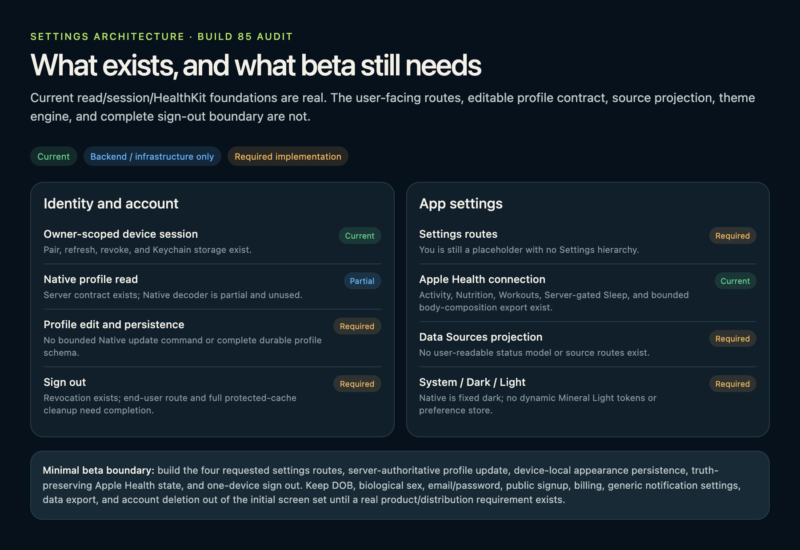

Founder review · design and architecture
DEXA lock + You / Settings
One focused DEXA parity correction, then a calm utility family for Profile, Data Sources, Appearance, and the minimum device-account controls needed for beta.
Evidence family locked after D1Beta-readiness architecture
Current contracts are separated from required implementation work; this is documentation, not product UI.
